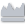
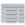
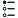
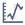
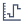
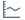
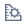

About the Trends section#
General information about the Trends section
Trends section overview#
You can track tags in real-time and observe the history in the Trends section. Here you can create a trend group to monitor values.
The section navigation menu is on the left side, and the trend viewer is on the right.
Click on a trend to open it. A trend can contain one or several tags. Often tags have similar names, so to avoid confusion, their names in a trend start with the name of a closest to the root directory folder. The following figure shows an example.
There are two types of trends: personal and global. The first ones are only available to a user who created them. The seconds are public, and other users of ControlMachines™ HMI View can observe them. Personal trends have the following icons: . And global trends have these: .
Depending on tag properties, you can switch between two modes:
- REAL TIME
- HISTORY
In the REAL TIME mode, users can see moving graphs that display values of one or several tags at the moment of observation.
HISTORY mode displays retrospective data on different time scales. Data in the history mode can be shown both as a graph and a table. Users can observe history for hours, days, weeks, months, years and the whole time. Also, it is possible to adjust the exact period to display history.
History viewer#
History viewer has several instruments to adjust the display of a trend group.
You can switch from the graph view to the table view using respective buttons  in the trend viewer's header. These buttons represent three views that a trend group can have:
- Graph View
- Scatter Chart View
- Table View
Time controls menu#
The Time controls menu allows adjusting of historical data periods. It is possible to display tag values for an hour, a day, a week, a month, a year or the whole period of tag's functioning. Also, you can set a custom period of data display. See the Time controls menu in the following figure.
Compare tag values for the same period from another year. Click the Choose years to compare button  and select available for comparison tags. You can have the comparison displayed in the Graph View and Table View. The data from a different year is shown as a separate graph or column depending on the view.
Customizing the data display#
A toolbar on top of the history viewer contains instruments for customising the data display.
You can choose how to display charts. There are two modes:
- With interpolation
- Without interpolation
Find the Interpolation button / in the toolbar to switch between the modes.
By clicking on the Show Min/Max button , you can turn on and off the Min/Max mode. When activated, this mode displays the lowest and the highest of values by painting an area around the aggregated value line. You can see an example in the figure below.
This mode is available when tag values grouped by a period. In this case, the graph shows aggregated data and the painted area shows the range of values that took place.
The Manage Axes button  opens a menu for adjusting axes.
You can find the Show/Hide Events button / in the viewer's toolbar. Click this button to show events that occurred with tags from the trend group. You can see the following events:
- Alarm activation
- Alarm deactivation
- Tag value update
History navigation menu helps to move on the time axis in the graph view.
Sharing trends#
Click Share Trend Group in the toolbar. In the Share Trend Group menu, set the period during which the link would be active and click Create Link.
Copy the link in the Shared Link dialog and send it to people you need.
Parent article:
- ControlMachines™ HMI View
This article observes ControlMachines™ HMI View, here you can read about its structure and common elements.
Related article:
- Creating a trend group
This task shows how to create a trend group